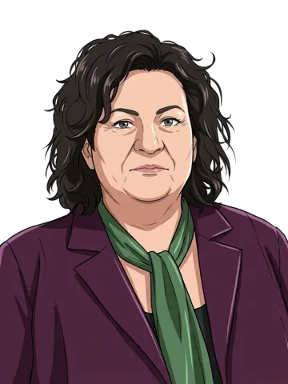

Begroting Buitenlandse Zaken 2027 · deel 4 van 6
Vijf partijen over Gaza, Israël, Oekraïne en Insiya bij begroting Buitenlandse Zaken
Wat moet Nederland doen richting Israël en de Palestijnse gebieden?
“Nederland maakt in de ogen van Israël sinds 7 oktober een behoorlijk aantal bokkensprongen. Daarom heb ik eigenlijk maar één vraag: wat gaat deze minister komend jaar doen om het vertrouwen van deze belangrijke partner te herwinnen?”

SGP · 3 zetels · oppositie
▶ 14.44 uur · Bekijk dit moment (Debat Direct)Lees in het verslag
“Nederland kan veel meer en moet veel meer doen om een einde te maken aan de genocide. … Op militair vlak kunnen we alle directe en indirecte wapenhandel met Israël stopzetten.”

PvdD · 3 zetels · oppositie
▶ 14.50 uur · Bekijk dit moment (Debat Direct)Lees in het verslag
Videolinks openen Debat Direct, de site van de Tweede Kamer.
In dit deel van het debat over de begroting van Buitenlandse Zaken voor 2027, op 11 november 2026, geven Stoffer (SGP), Teunissen (PvdD), Ceder (ChristenUnie), Dobbe (SP) en Van der Plas (BBB) hun inbreng. Stoffer vraagt wat de minister doet om het vertrouwen van Israël te herwinnen; Teunissen vindt dat Nederland veel meer kan en moet doen om een einde te maken aan wat zij de genocide in Gaza noemt. Ceder wil met een amendement meer inzet op verzoeningsprojecten tussen Israëli's en Palestijnen. Dobbe vraagt of het kabinet nu in Europa het initiatief wil nemen voor vredesonderhandelingen tussen Oekraïne en Rusland, en Van der Plas vraagt waarom het ontvoerde meisje Insiya nog steeds niet terug is uit India. Daarna is er volgens de voorzitter voldoende steun voor zijn voorstel om de minister dezelfde avond vanaf 18.30 uur te laten antwoorden.
Meer over waar het om ging
Tekst geschreven door een AI-model en nagelezen op 12 november 2026 tegen het verslag.
Hoe liep het af
Over het wetsvoorstel zelf: uitslag niet in onze gegevens.
In onze gegevens staan geen moties bij dit debat.
Over het wetsvoorstel en de amendementen stemt de Kamer apart; na de Tweede Kamer stemt de Eerste Kamer.
De tweede termijn van dit debat staat niet in onze gegevens; die kan op een andere dag zijn. Moties worden meestal in de tweede termijn ingediend.
Wat zeiden de sprekers
Elke spreker, in de volgorde waarin ze spraken, met het aantal zetels van de fractie en of die in de coalitie zit.
Chris Stoffer SGP · 3 zetels · oppositie
Stoffer wil naast een sterke krijgsmacht ook blijven investeren in diplomatie. Hij vraagt wat de minister komend jaar doet om het vertrouwen van Israël te herwinnen, en of hij in Azerbeidzjan de vrijlating van de Armeense krijgsgevangenen en in Algerije de godsdienstvrijheid ter sprake bracht.

Felix Klos D66 · 26 zetels · coalitie
Klos vraagt of de SGP de Europese wet wil veranderen die Russisch lng vanaf 1 januari 2027 verbiedt, ook in langlopende contracten. Na het antwoord van Stoffer zegt hij dat ze het eens zijn over het doel.
Christine Teunissen PvdD · 3 zetels · oppositie
Teunissen vindt dat Nederland veel meer kan en moet doen om een einde te maken aan wat zij de genocide in Gaza noemt, bijvoorbeeld door de Palestijnse Staat te erkennen en alle wapenhandel met Israël te stoppen. Ze wil dat Nederland Oekraïne militair en humanitair blijft steunen en ook inzet op de-escalatie en diplomatie. Ook vraagt ze de minister toe te zeggen dat Nederland niet instemt met afspraken die gevolgen hebben voor arrestatiebevelen, onderzoeken of vervolgingen van het Internationaal Strafhof.

Don Ceder ChristenUnie · 3 zetels · oppositie
Ceder wil met een amendement meer inzet op verzoeningsprojecten tussen Israëli's en Palestijnen. Hij vindt de Nederlandse inzet in Syrië al jaren wat naïef en wil dat Surinamers zonder visum naar Nederland kunnen reizen.

Sarah Dobbe SP · 3 zetels · oppositie
Dobbe vindt dat het kabinet te weinig doet om wat zij de genocide in Gaza noemt te stoppen, en vraagt of het kabinet nu in Europa het initiatief wil nemen voor vredesonderhandelingen tussen Oekraïne en Rusland. Ze vindt 193 miljoen euro tegen energiearmoede in Nederland veel te weinig; militaire steun aan Oekraïne heeft de SP volgens haar altijd gesteund.

Caroline van der Plas BBB · 3 zetels · oppositie
Van der Plas vraagt waarom het meisje Insiya, dat op 2-jarige leeftijd door haar vader naar India is ontvoerd, nog steeds niet terug is, terwijl de Nederlandse rechter haar moeder als enige het gezag gaf. Ze vraagt of het kabinet India formeel om uitlevering van de vader heeft gevraagd en kondigt een motie aan voor meer druk. Ook staat BBB volgens haar heel kritisch tegenover de 1,2 miljard euro niet-militaire steun aan Oekraïne; dat je daarmee zou willen dat Poetin hier de grens over loopt, noemt ze onzin.

Maes van Lanschot CDA · 18 zetels · coalitie
Van Lanschot vraagt de SP of Nederland volgens haar wapens aan Oekraïne moet blijven leveren. Hij steunt het voorstel van de voorzitter over de planning van het debat.

Ralf Dekker FVD · 7 zetels · oppositie
Dekker steunt het voorstel van de voorzitter om de minister op de avond van 11 november te laten antwoorden, al kan hij dat debat niet helemaal meemaken.

Stephan van Baarle DENK · 3 zetels · oppositie
Van Baarle noemt het voorstel van de voorzitter over de planning van het debat een constructief compromis en steunt het.
Dit debat in delen
Lange debatten zijn geknipt langs de rondes van het debat. Je leest nu deel 4.
- 1.PRO en D66 openen debat Buitenlandse Zaken; D66 bevraagd over GazaInbreng van de Kamer · 11.12 uur · citaten van Sarah Dobbe (SP, 3) en Hanneke van der Werf (D66, 26)
- 2.PVV wil ander buitenlandbeleid, VVD wil meer druk op RuslandInbreng van de Kamer · 12.07 uur · citaten van Ralf Dekker (FVD, 7) en Raymond de Roon (PVV, 19)
- 3.Inbreng van de Kamer: Hoogeveen, Van Lanschot, Dekker, Van BaarleInbreng van de Kamer · 13.30 uur · geen samenvatting, wel het verslag
- 4.Vijf partijen over Gaza, Israël, Oekraïne en Insiya bij begroting Buitenlandse ZakenInbreng van de Kamer · 14.44 uur · citaten van Chris Stoffer (SGP, 3) en Christine Teunissen (PvdD, 3)
- 5.Minister Berendsen antwoordt over vredesgesprekken Oekraïne, de G20 en IsraëlAntwoord van het kabinet · 18.31 uur · citaten van Stephan van Baarle (DENK, 3) en Tom Berendsen (kabinet)
- 6.Antwoord van het kabinet: BerendsenAntwoord van het kabinet · 19.22 uur · geen samenvatting, wel het verslag
Controleer het zelf
Alles wat er gezegd is, staat letterlijk in het verslag, met per spreekbeurt een link naar de video.
Wat betekent dat
Moeilijke woorden
- lng
- Vloeibaar gemaakt aardgas, dat per schip wordt vervoerd.
- BDS-beweging
- Een wereldwijde beweging die campagne voert voor boycots, sancties en het ontmoedigen van investeringen in Israël. Zo omschrijft Stoffer haar in het debat.
- Rode Lijndemonstratie
- Een demonstratie in Amsterdam waar volgens Teunissen en Dobbe zo'n 200.000 mensen meer actie van het kabinet eisten tegen wat zij de genocide in Gaza noemen.
- amendement
- Een voorstel van een Kamerlid om een wetsvoorstel te veranderen, hier de begroting.
- energiearmoede
- Als mensen hun energierekening moeilijk kunnen betalen.
- Internationaal Strafhof
- Het internationale hof in Den Haag dat personen kan vervolgen voor genocide, oorlogsmisdaden en misdaden tegen de menselijkheid. Nederland is het gastland.
- eerste termijn
- De eerste ronde van een debat: eerst spreken de Kamerleden, daarna antwoordt het kabinet.
Debat in de plenaire zaal
Een debat in de grote zaal van de Tweede Kamer, waar alle Kamerleden mogen meedoen en waar ook gestemd wordt.
Wetsvoorstel
Een voorstel voor een nieuwe wet of een wijziging van een wet, zoals een begroting of het Belastingplan. De Tweede Kamer stemt erover; daarna stemt de Eerste Kamer. Pas als beide Kamers voor zijn, kan de wet ingaan.
Amendement
Een voorstel om een wetsvoorstel te veranderen. Wordt een amendement aangenomen, dan verandert de tekst van het wetsvoorstel.
Eerste Kamer
Na de Tweede Kamer stemt ook de Eerste Kamer over elk wetsvoorstel. De Eerste Kamer kan een wetsvoorstel aannemen of verwerpen, maar niet veranderen. Over moties van de Tweede Kamer stemt de Eerste Kamer niet.
Eerste en tweede termijn
Een debat heeft meestal twee rondes. In de eerste termijn spreken de Kamerleden en antwoordt het kabinet. In de tweede termijn reageren de Kamerleden nog kort, vaak met moties, en antwoordt het kabinet opnieuw. Daardoor spreekt een minister vaak als laatste: dat volgt uit de vaste orde van een debat, niet uit wie gelijk heeft.
Coalitie en oppositie
De coalitie zijn de fracties die het kabinet steunen. Op 14 november 2026 zijn dat D66, CDA en VVD, samen 66 van de 150 zetels. De andere fracties heten oppositie. Omdat de coalitie geen 76 zetels heeft, is dit een minderheidskabinet: voor een meerderheid zijn bij elke stemming ook stemmen van andere fracties nodig. Oppositiefracties stemmen daarom vaak mee met de coalitiefracties.
Voorlopig verslag
Het verslag van de Kamer verschijnt eerst als ongecorrigeerde versie. Sprekers kunnen daarna kleine verschrijvingen laten verbeteren. Citaten op deze site komen uit de versie die op het moment van bouwen beschikbaar was.